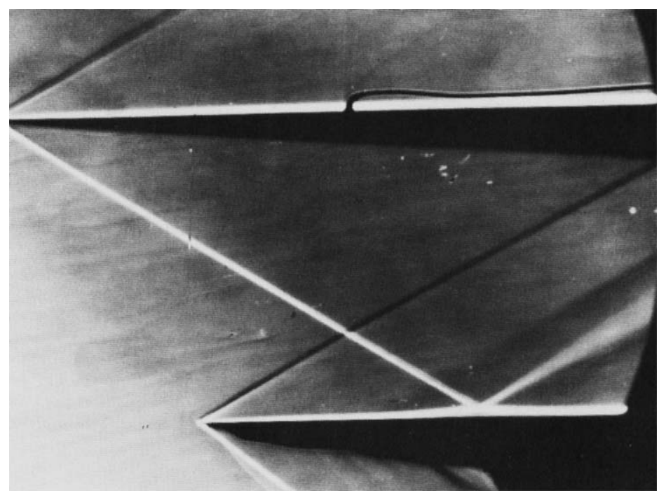
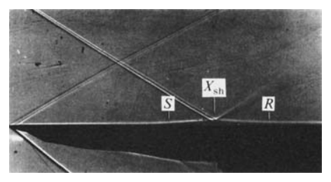
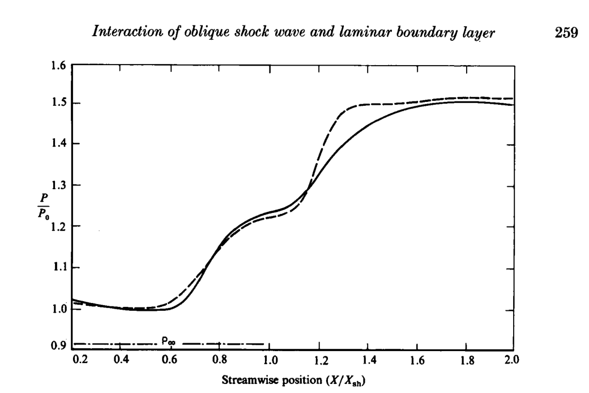
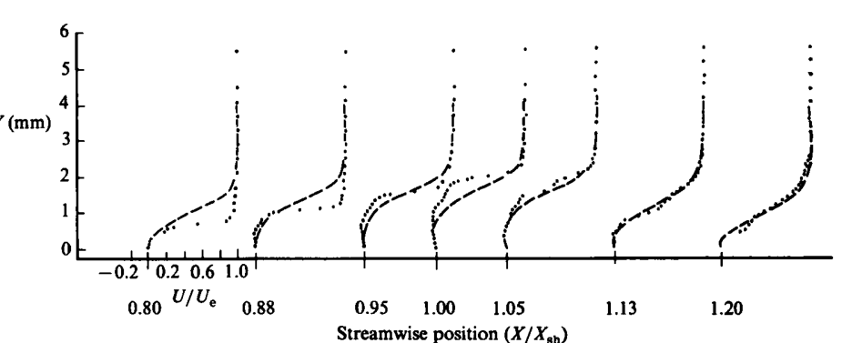

01中文摘要
重新研究斜激波与层流边界层的相互作用。来流马赫数2.15、雷诺数10⁵、总压比1.55；实验证明干扰为层流且名义二维。实验测量平板压力分布，并用单分量激光多普勒测速获得附着区和分离区的速度剖面。数值上求解完整可压缩Navier-Stokes方程，采用Beam-Warming隐式近似因子分解算法。计算结果与实验在压力分布、分离点与再附点位置以及速度剖面上均吻合良好。
原始摘要（英文/原文）
An investigation of an oblique shock wave/laminar boundary layer interaction is presented. The Mach number was 2.15, the Reynolds number was 10 5 and the overall pressure ratio was 1.55. The interation has been demonstrated to be laminar and nominally two-dimensional. Experimental results include pressure distributions on the plate and single component laser-Doppler velocimetry velocity measurements both in the attached and separated regions. The numerical results have been obtained by solving the full compressible Navier-Stokes equations with the implicit approximate factorization algorithm by Beam & Warming (1980). Comparison with experimental data shows good agreement in terms of pressure distributions, positions of separation and reattachment and velocity profiles.
02阅读说明
文章类型：实验+数值研究（J. Fluid Mech. 1987, vol.177, pp.247-263，17页全文）。实验在 VKI S-1 连续式超声速风洞进行：M=2.20 平板+斜激波发生器，壁面压力扫描阀测量+单分量激光多普勒测速（LDV）；数值用 Beam & Warming 隐式近似因子分解求解全可压缩 N-S。全文、图注与工况表可读；正文式(1)-(3)在文本层丢失，已回原 PDF 第253页核对。已抓取 8 张图件可用，但图15（摩阻分布）、图5（计算域）未抓取。边界层厚度 δ、动量厚度 θ、湍流度等文中未提及，信息完整度中上。 文章类型：期刊
03一句话核心与三句话摘要
M2.2、Re≈10^6 斜激波/层流边界层干扰：LDV 与压力实验结合 N-S 计算，确立 AR≥2.5 二维判据。
- 层流激波/边界层干扰的定性图像已由早期实验与干扰边界层理论建立，但缺少可与现代 N-S 解逐点对比的详细流场数据，且有限展长可能污染分离区尺度。 AI概括
- 在 M=2.20、Re_Xsh≈0.96×10^6、总压比 1.55 条件下，用壁面压力与单分量 LDV 测量分离区及附着区速度剖面，并用 Beam-Warming 隐式 AF 格式求解全 N-S。 AI概括
- 带侧板时 AR≥2.5 可视为二维；实测分离/再附位于 x/Xsh=0.78/1.28，计算给出 0.79/1.24，压力与下游速度剖面吻合，上游剖面偏差被归因于示踪粒子跟随性不足。 AI概括
04核心内容清单
| 要点 | 类型 | 重要性 | 原文依据 | 属性 |
|---|---|---|---|---|
| 带侧板时展弦比 AR≥2.5 即可把中心线流动视为二维；该极限远大于压缩角干扰（Lewis、Sfeir）所需的 AR，支持 Green 关于几何效应在压缩角情形较弱的观察。 | 二维性判据 | A | p.256，图6-图9 | 原文明确 |
| LDV 速度剖面外推 u=0 线得分离点 x/Xsh=0.78（62 mm±1 mm）、再附点 1.28（102 mm±2 mm），与纹影和油滴堆积一致。 | 关键测量 | A | p.258；图10、图4 | 原文明确 |
| 分离区长度 40 mm，分离边界层最大高度略大于 3 mm；近壁测量在分离区可达距壁 0.1 mm。 | 分离区尺度 | A | p.262、p.258 | 原文明确 |
| 计算给出 S=0.79、R=1.24，与实验 0.78/1.28 接近；压力分布在前段与平台区吻合，再附处压升梯度计算偏陡。 | 数值验证 | A | p.261、p.259；图12、图15 | 原文明确 |
| 分离区下游速度剖面计算与实验吻合很好；上游实验速度上升更快，减半网格不改变计算结果，作者归因于示踪粒子速度滞后。 | 偏差归因 | A | p.260-261；图13、图14 | 原文明确 |
| 实测 p0/p∞=1.10，比弱干扰理论 1.03 高 7%；计算改用 M=2.15（激波角 30.8°）以匹配压升，与实测反算 30.6° 接近。 | 来流/激波强度标定 | B | p.259 | 原文明确 |
| 压力测量重复性：干扰前段散度在总压升 4% 内，下游在 8% 内；LDV 重复测量一致性良好。 | 不确定度 | B | p.258；图11 | 原文明确 |
| 无侧板时中心线压力下降，且 II 型（更大展长）与二维分布的偏差反而更大，作者推测是靠近风洞壁的流场非均匀所致。 | 实验现象 | B | p.255；图8 | 原文明确 |
| 数值采用 50×36 网格、CFL=178、<150 步收敛，VAX 11/780 上约 1 h；减半网格 100×71 用于验证。 | 数值设置 | B | p.253 | 原文明确 |
| LDV 示踪粒子标称直径 0.45±0.05 µm，但实验结果表明该尺寸在此工况下可能偏小估，Schutz (1985) 的初步结果支持粒子实际更大。 | 测量局限 | B | p.251、p.261 | 原文明确 |
| 单次运行约 2 h 受限，油雾在平板与窗口沉积；油珠堆积反而提供了分离线的可视化确认。 | 实验限制 | C | p.251 | 原文明确 |
05引言：研究问题与领域缺口
【原文明确】斜激波/层流边界层干扰的主要特征已由 Chapman, Kuehn & Larson (1958)、Hakkinen et al. (1959) 的实验以及 Crocco & Lees (1952)、Lees & Reeves (1964) 的干扰边界层理论建立，早期实验成功预测了壁面压力分布（p.247）。但作者指出这些实验未提供现代 N-S 计算可逐点对比的详细流场数据；该构型同时包含激波与分离流这两个数值上最难复现的特征，因而被多组 CFD 工作者选作算例，且层流性质使其不含湍流模型不确定性（p.247）。因此本研究目标是提供一套完整的实验数据（流场+壁面）作为数值解对比基准，并给出 N-S 解与实验对比（p.247）。【原文明确】第二个动机是 Green (1970) 及 Reda & Murphy 关于有限展长/三维扰动会显著改变分离区尺度的观察，故先进行广泛的二维性检验（p.248）。【AI概括】研究问题可归纳为：在 M≈2.2、Re_Xsh≈10^6 下，分离区能否达到二维极限，LDV 能否在近壁/反向流中给出可信数据，N-S 解能否复现压力与分离/再附位置。
06流动条件与几何构型
| 项目 | 数值/描述 | 依据 | 备注 |
|---|---|---|---|
| 来流马赫数（压力/速度实验） | M∞=2.20 | §2.1，p.248 | 风洞标称值 |
| 来流马赫数（数值计算） | M=2.15 | §5.1，p.259 | 为使 p0/p∞=1.1 与实测压升匹配而选取 |
| 单位雷诺数 | Re∞=1.2×10^6 m^-1 | §2.1，p.248 | |
| 基于激波入射距离的雷诺数（压力试验） | Re_Xsh=0.96×10^6 | 图6、图7、图12注；p.254 | Xsh=80 mm |
| 基于激波入射距离的雷诺数（LDV 试验） | Re_Xsh=1.12×10^5（图10注原文如此） | 图10注，第11页 | bundle OCR 如此；与 LDV 总压 0.123 bar 对应的量级应为 10^6，疑为 OCR 丢指数，需回原文核对 |
| 总压（压力分布试验） | pt=0.107 bar±2% | §2.1，p.248 | |
| 总温（压力分布试验） | Tt=293 K±2% | §2.1，p.248 | |
| 总压（LDV 试验） | pt=0.123 bar±2% | §2.1，p.248 | |
| 总温（LDV 试验） | Tt=303 K±2% | §2.1，p.248 | |
| 实测总压比 p0/p∞ | 1.10 | p.259；图12 | 弱干扰理论值 1.03 |
| 总压升（I 型，AR 对比） | (pf-p0)/p0=0.45 | §4.1，p.254 | |
| 总压升（II 型，AR 对比） | 总压差 0.50 | §4.1，p.255 | |
| 总压比（全文概括） | pf/p0=1.55 | 摘要 p.247；结论 p.261 | |
| 激波发生器压缩角 | 3.75° | §2.2，p.249 | |
| 计算所用入射激波角 | 30.8° | p.259；图12注 | |
| 由激波发生器实测压力反算的激波角 | 30.6° | p.259 | |
| 激波入射位置 | Xsh=80 mm | 图6、图10、图12注；§2 | |
| 平板展长 | I 型 200 mm；II 型 320 mm | §2.2，p.249 | |
| 激波发生器展长 | I 型 250 mm；II 型 360 mm | §2.2，p.249 | |
| 前缘厚度 | <0.1 mm | §2.2，p.249 | |
| 侧板间距 | I 型 144、200 mm；II 型 200、240、280、320 mm | §2.2，p.249 | |
| 展弦比（AR=侧板间距/Xsh）试验值 | I 型 1.8、2.5；II 型 2、2.5、3.5、4；另有无侧板工况 | §4.1，p.254 | |
| 壁面热条件 | 绝热壁 | §2.1，p.248 | |
| 自由流速度（实测） | 540 m/s | p.259 | |
| 分离区长度 | 40 mm | §6，p.262 | |
| 分离边界层最大高度 | 略大于 3 mm | §6，p.262 |
07核心现象与关键参数
| 参数 | 定义 | 数值 | 关系/说明 | 依据 |
|---|---|---|---|---|
| 展弦比 AR | 侧板间距与激波入射距离 Xsh 之比 | 二维极限 AR≥2.5（带侧板） | AR>1 为 Lewis/Sfeir 压缩角情形的极限，本实验显著更高 | p.254、p.256 |
| 分离点 S | u=0 线外推与壁面交点 | x/Xsh=0.78；x=62 mm±1 mm | 计算 0.79 | p.258、p.261 |
| 再附点 R | u=0 线外推与壁面交点 | x/Xsh=1.28；x=102 mm±2 mm | 计算 1.24 | p.258、p.261 |
| 分离区长度 L | R 与 S 的流向距离 | 40 mm（约 0.50 Xsh） | 由 102-62 mm 得 | p.262；p.258 |
| 分离区最大高度 hmax | 分离边界层最大厚度量级 | 略大于 3 mm | 约为 L 的 7.5% | p.262 |
| 总压比 p0/p∞ | 干扰区上游平台压力与自由流静压之比 | 1.10（实验）；1.03（弱干扰理论） | 偏高 7% | p.259 |
| 整体压比 pf/p0 | 入射+反射激波后最终均匀压力与上游压力之比 | 1.55 | 摘要与结论一致 | p.247、p.261 |
| 入射激波角 | 相对来流方向 | 30.8°（计算输入）；30.6°（实测反算） | 差 0.2° | p.259 |
| 计算网格 | 流向×法向点数 | 50×36；减半验证 100×71 | 法向指数拉伸 | p.253 |
| CFL 数 | 时间推进稳定参数 | 178 | <150 步收敛 | p.253 |
| LDV 探针体尺寸 | 条纹模式测量体 | 宽 144 µm、长 4.33 mm、条纹间距 7.72 µm | 18.7 条条纹 | 表1，p.250 |
| 示踪粒子直径 | 橄榄油雾平均直径 | 0.45±0.05 µm（标称） | 作者怀疑实际更大 | p.251、p.261 |
08方法与数据
【原文明确】风洞为 VKI S-1 40 cm×40 cm 连续式超声速风洞，M∞=2.20；压力分布试验 pt=0.107 bar±2%、Tt=293 K±2%，对应单位雷诺数 1.2×10^6 m^-1；LDV 试验 pt=0.123 bar±2%、Tt=303 K±2%；纹影未观察到非定常，全部为绝热壁（p.248）。模型为平板+激波发生器，平板展长 200 mm（I型）/320 mm（II型），激波发生器展长 250/360 mm，前缘厚度<0.1 mm，压缩角 3.75°；可安装三角侧板，I型板间距 144、200 mm，II型 200、240、280、320 mm（p.249）。压力用 Statham 0.5 PSID（3500 N m^-2）传感器经扫描阀测量、以试验段壁压为参考，另用 1 PSI（7000 N m^-2）传感器以真空罐为参考测 p∞，均用 Betz 水柱压力计标定（p.249-250）。LDV 为单分量、双光束、条纹模式、前向散射，λ=0.5145 µm、光束直径 3.40 mm、焦距 750 mm、交角 3.82°、条纹间距 7.72 µm、探针体宽 144 µm、长 4.33 mm（表1，p.250）；示踪粒子为橄榄油雾，平均直径 0.45±0.05 µm（p.251）。数值方法见 §3，核心为 Beam & Warming 隐式 AF 格式（p.251-253）。
| 项目 | 内容 | 依据 | 备注 |
|---|---|---|---|
| 风洞 | VKI S-1 40 cm×40 cm 连续式超声速风洞，M∞=2.20 | §2.1，p.248 | |
| 模型 | 平板（200/320 mm 展长）+斜激波发生器（250/360 mm 展长），压缩角 3.75°，可装三角侧板 | §2.2，p.249 | |
| 壁面压力测量 | 中心线一排测压孔+偏心孔检查均匀性；Statham 0.5 PSID（3500 N m^-2）传感器经扫描阀测量，以试验段壁压为参考；1 PSI（7000 N m^-2）传感器以真空罐为参考测 p∞ | §2.3.1，p.249-250 | 传感器置于试验段地板下近似同压腔体以减小漏气影响 |
| 压力标定 | 大气条件下用 Betz 水柱压力计标定两台 Statham 传感器；pt 用汞柱压力计 | §2.3.1-2，p.250 | |
| 来流标定 | 6 mm 外径 Pitot 管（位于中心线上方 25 mm），用 Rayleigh Pitot 关系求 M∞；p∞ 由等熵关系计算 | §2.3.2，p.250-251 | |
| LDV 系统 | 单分量、双光束、条纹模式、前向散射；λ=0.5145 µm；焦距 750 mm；交角 3.82°；条纹间距 7.72 µm | §2.3.3、表1，p.251 | |
| 示踪粒子 | Norgren Microfog 气溶胶发生器产生橄榄油雾，标称平均直径 0.45±0.05 µm | §2.3.3，p.251 | |
| 速度剖面定位 | 由近壁剖面外推无滑移条件确定 y=0，再用移动坐标架修正；分离区可测至距壁 0.1 mm，上游 0.2 mm | §4.2，p.258 | |
| 数值方法 | Beam & Warming 隐式近似因子分解，求解广义坐标下全可压缩 N-S；中心差分；θ=1 一阶格式；右端加四阶耗散 | §3，p.251-253 | |
| 网格与收敛 | 50×36（法向指数拉伸）；100×71 减半验证；CFL=178；<150 步收敛；VAX 11/780 约 1 h | §3，p.253 | |
| 数值验证 | 与实测压力分布、S/R 位置、分离区速度剖面比较；减半网格对比；上游/下游剖面与 Chapman-Rubesin 理论比较 | §5，p.259-261；图12-14 | |
| 重复性 | 压力重复测量散度：前段 4%、下游 8%；LDV 多次重复一致性良好 | §4.3，p.258；图11 |
09核心推导与公式
本文没有解析理论推导，其“推导”是数值求解链：从守恒型 N-S 的广义坐标非定常形式出发，中心差分离散、隐式时间推进，对通量雅可比线性化并作近似因子分解，得到 Beam-Warming AF 格式，再以定常渐近解逼近实验工况。
关键假设
- 完全气体、层流，不需要湍流模型（p.247、p.253）
- 定常解通过时间渐近获得，取 θ=1 的一阶时间格式
- 平板边界层很薄，法向网格指数拉伸即可分辨
- 物面无滑移、绝热壁（实验侧）
- 二维计算域，忽略侧板与有限展长效应
推导过程
将守恒变量与无粘通量写成广义坐标 (ξ,η) 形式，用逆变换雅可比 J 归一；以 ρ∞、c∞、c∞²、p∞、T∞、Xsh、Xsh/c∞ 分别无量纲化密度、速度、单位质量能量、压力、温度、长度与时间。式(2) 给出守恒变量 U 与无粘通量 F、G 的具体分量。
无粘与粘性通量均用中心差分；时间方向隐式推进后对通量雅可比作线性化，并做近似因子分解，得到两个近似因子算子相乘作用于增量 Δq̂ 的 AF 格式，右端为当前残差（无粘通量散度减去粘性通量散度）。
定常计算取 θ=1（一阶），因其耗散性优于二阶 θ=1/2；隐式格式不能耗散的高频短波由右端附加的四阶耗散项抑制（Beam & Warming 1978；Thomas 1979）。
构型简单，网格解析生成：流向 50 点均匀、法向 36 点指数拉伸以分辨平板边界层；另用 100×71 减半网格验证。最大 CFL 数 178，<150 步收敛，DEC VAX 11/780 上约 1 h。
适用边界：该“推导”只是数值格式构造，不是物理模型推导；一阶时间精度依赖四阶人工耗散；仅层流、绝热壁、二维；网格 50×36 规模有限，只做了减半对比而非系统网格收敛研究；式(2)(3) 的部分符号与雅可比命名受材料限制无法确认。
10结果：主要发现与关键证据
【原文明确】二维性：I型 AR=1.8 与 2.5 的上游压力差可达总压差的 8%，去侧板再增 3%；II型 AR=2、2.5、3.5、4 全部落在总压差 0.50 的 6% 带内且无系统趋势，故带侧板 AR≥2.5 可视为二维（p.254-256，图6-9）。【原文明确】速度剖面外推 u=0 线给出分离点 S 在 x/Xsh=0.78（62 mm±1 mm）、再附点 R 在 1.28（102 mm±2 mm），与纹影及油滴堆积位置一致；分离区长度 40 mm，分离边界层最大高度略大于 3 mm（p.258、p.262）。【原文明确】计算（M=2.15、激波角 30.8°）给出 S=0.79、R=1.24，压力分布在干扰前段与平台区与实验吻合，但再附处压升梯度偏陡（p.259、p.261，图12、图15）。【原文明确】分离区下游速度剖面吻合很好，上游实验速度比计算更快趋近 Ue；减半网格结果几乎不变，且与 Chapman-Rubesin 理论一致，故作者归因于实验误差（粒子滞后）（p.260-261，图13、图14）。
| 发现 | 证据 | 证据类型 | 强度 | 位置 | 属性 |
|---|---|---|---|---|---|
| 带侧板时 AR≥2.5 的中心线流动可视为二维；II 型各 AR 的压力曲线落在总压差 6% 带内。 | 图7、图9 及 p.255-256 的讨论；无侧板时压力下降、II 型偏差反而更大 | 实验（压力分布/展向均匀性） | 强 | p.254-256；图6-图9 | 原文明确 |
| 分离点 x/Xsh=0.78（62 mm±1 mm）、再附点 1.28（102 mm±2 mm），与纹影及油滴堆积一致。 | 图10 速度剖面 u=0 线外推；图4 纹影；p.258 文字 | 实验（LDV+可视化） | 强 | p.258；图4、图10 | 原文明确 |
| 分离区长度 40 mm、最大高度略大于 3 mm，近壁测量可达 0.1 mm。 | p.262 结论段；图10 剖面近壁点 | 实验（LDV） | 强 | p.258、p.262 | 原文明确 |
| N-S 计算（M=2.15）复现压力分布前段与平台区，S/R 与实验相差约 0.01–0.04 Xsh，但再附处压升梯度偏陡。 | 图12 压力对比；图15 摩阻零点；p.261 数字 | 数值-实验对比 | 强 | p.259、p.261；图12、图15 | 原文明确 |
| 分离区下游速度剖面吻合很好；上游实验速度更快趋近 Ue，减半网格不改变计算结果，作者归因于示踪粒子速度滞后。 | 图13、图14；p.260-261 讨论；Schutz (1985) 初步结果 | 数值-实验对比+误差分析 | 中 | p.260-261；图13、图14 | 原文明确 |
| 实测 p0/p∞=1.10 比弱干扰理论 1.03 高 7%，可能由平板<1°安装角或约 2% 的马赫数非均匀造成。 | 图12 自由流压力线；p.259 论证；自由流速度 540 m/s 佐证 | 实验/理论比较 | 中 | p.259；图12 | 原文明确 |
| 压力测量重复性在前段为总压升 4%、下游 8%；LDV 重复测量一致性良好。 | §4.3 文字；图11 重复剖面 | 不确定度/重复性 | 中 | p.258；图11 | 原文明确 |
| 去侧板后中心线压力下降，II 型（更大展长）与二维分布的偏差反而大于 I 型，作者推测为靠近洞壁的流场非均匀。 | 图8 与 p.255 文字 | 实验现象 | 中 | p.255；图8 | 原文明确 |
11机制解释与论证链
【原文明确】激波入射点上游的逆压梯度使边界层增厚、壁面剪应力下降直至出现反向流，形成分离泡；入射点下游外流经过反射膨胀扇而转折，使边界层重新变薄，并在再附后恢复（p.258，图4）。【原文明确】LDV 剖面显示分离区上方仍保持接近未扰动的边界层形状，反向流只占近壁薄层，因而 u=0 线可线性外推定位 S、R（p.258）。【AI推断】压力分布在干扰前段与平台区被 N-S 解准确复现，说明分离泡的整体尺度由无粘激波-膨胀系与层流边界层的自由干扰平衡控制；再附处压升梯度偏陡则提示计算对再附区湍流/非定常或近壁分辨不足，但本文为层流，作者未给出解释。
12讨论：结论、贡献与局限
【原文明确】机理解释：激波入射点上游边界层增厚并伴随反向流区扩大；下游因外流经过入射点的反射膨胀而转折，边界层厚度减小（p.258）。【原文明确】测量 p0/p∞=1.10，比弱干扰理论（Kubota & Ko 1967）的 1.03 高 7%，可能源于平板相对来流有<1°的微小安装角或试验段马赫数约 2% 的非均匀；因绝对压力测量经多种仪器复核未发现系统误差，计算改用 M=2.15 以匹配实测压升，对应激波角 30.8°，与由激波发生器实测压力反算的 30.6° 很接近（p.259）。【原文明确】作者承认：速度测量时去掉了侧板，故严格意义上不能声称流场测量满足二维判据；再附处压升梯度偏陡无法解释，仅指出 Carter (1972) 对 Lewis et al. 压缩角的计算有类似行为（p.259-260）。【AI推断】本文的贡献不在于新机理，而在于给出可复用的层流 SBLI 基准数据与二维性判据；其单马赫数、单雷诺数、绝热壁、单分量 LDV 的限制使结论外推需谨慎。
作者结论
【原文明确】作者结论：完成斜激波/层流边界层干扰的实验+数值研究，M=2.15、Re≈10^6、总压比 1.55；带侧板时 AR>2.5 可视为二维；LDV 在分离与附着区均测到距壁 0.1 mm 的剖面，分离边界层最大高度略大于 3 mm、分离长度 40 mm，S/R 与纹影一致；全 N-S（Beam-Warming AF）解在压力分布、S/R 位置和下游速度剖面上与实验吻合；减半网格证明上游剖面差异源于实验误差，很可能是有限尺寸示踪粒子的速度滞后（p.261-262）。【AI概括】核心主张是：该构型可作为层流 SBLI 的可靠基准，二维性需 AR≥2.5 而非压缩角情形的 AR>1。
主要贡献
- 给出一套含壁面压力与近壁 LDV 速度剖面的层流斜激波/边界层干扰基准数据（p.247、p.262）
- 确立带侧板时 AR≥2.5 的二维性判据，并指出其高于压缩角干扰的 AR>1（p.256）
- 用 Beam-Warming 全 N-S 解系统对比压力、S/R 与速度剖面，量化了计算与实验的差异（p.259-261）
- 把上游速度剖面偏差归因于示踪粒子跟随性，并给出网格减半的排除性证据（p.260-261）
局限与未解决问题
【原文明确】作者承认：速度测量时去掉了侧板，严格来说流场测量不满足二维判据；再附处压升梯度偏陡无法解释；单分量 LDV 只能测流向速度；单次运行约 2 h，油雾沉积限制测量；示踪粒子尺寸可能被低估（p.251、p.258-261）。【AI推断】只研究一个马赫数（2.2）与一个雷诺数（≈10^6）、绝热壁、层流，结论不能外推到湍流或高焓工况；未给出 δ、θ、形状因子等边界层参数，也未做压力/温度敏感性；图15（摩阻）与图5（计算域）未抓取，摩阻讨论只能依据正文数字。
13对高速流动与工程的意义
【原文明确】该构型因同时含激波与分离流、又无湍流模型不确定性，被多组 CFD 工作者用作验证算例（p.247）。【AI推断】对高速流动工程的意义在于：(1) 提供层流 SBLI 的“标准答案”，可用于校验 N-S 求解器对分离泡尺度、平台压力与再附的预测；(2) AR≥2.5 的二维性判据可直接指导风洞实验的展长/侧板设计，避免 Green 所指的有限展长误差；(3) LDV 近壁（0.1 mm）测量与 u=0 线外推方法可迁移到进气道/隔离器层流干扰实验；(4) 粒子滞后的教训提醒超声速 LDV 需先标定跟随性。以上为推断，原文未讨论具体工程部件。
14核心图件




15可引用原文素材
| 原文短句 | 可支持的观点 | 位置 | 使用建议 |
|---|---|---|---|
| “demonstrated to be laminar and nominally two-dimensional” | 干扰为层流、名义二维 | 摘要，p.247 | 引言中界定研究对象 |
| “S occurs at x/Xsh = 0.78 or 62 mm ± 1 mm” | 分离点定量位置 | §4.2，p.258 | 与计算结果或他人数据对比 |
| “R at 1.28 or 102 mm ± 2 mm” | 再附点定量位置 | §4.2，p.258 | 分离区长度引用 |
| “The length of separation was 40 mm.” | 分离区尺度 | §6，p.262 | 结论引用 |
| “The maximum height of the separated boundary layer was just over 3 mm.” | 分离区高度 | §6，p.262 | 与分离长度构成长宽比 |
| “Computed and measured pressure distributions agree well” | 数值验证结论 | §5.1，p.259 | 说明 N-S 解的适用性 |
| “the origin of the discrepancies lies in an experimental error” | 上游速度剖面偏差归因 | §5.2，p.261 | 讨论测量不确定度 |
| “two-dimensional for aspect ratios greater than 2.5” | 二维性判据 | §6，p.262 | 实验设计引用 |
16最终核验
| 核验项 | 结论 |
|---|---|
| 仅基于全文 | 是。全部结论取自 bundle 全文、图注及原 PDF 第253页（式1-3）核对；未引入外部文献或数据。 |
| A 级要点有依据 | 是。A 级条目（AR≥2.5、S/R=0.78/1.28、L=40 mm、h>3 mm、计算 0.79/1.24 与压力吻合、上游剖面偏差）均有页码+图号双重依据。 |
| 属性标注 | 是。core_points、three_sentence、findings 均逐条标注【原文明确】/【AI概括】/【AI推断】；one_line 与 significance 明确为概括/推断。 |
| 覆盖范围 | 17 页全文分 1 次读完；8 张抓取图件中选用 4 张；图5（计算域）、图15（摩阻）未抓取，仅据正文数字讨论。圆整误差、OCR 可疑值（图10 的 Re 指数）已注明。 |
| 无编造 | 未编造页码、图号、公式或数据。式(1)(2)(3) 经原 PDF 核对；式(3) 左端雅可比符号名无法确认处已注明；图10 雷诺数指数异常已标注“需回原文核对”。 |
需回原文确认
- 图10 注中 Re_Xsh 的指数是 10^5 还是 10^6？bundle OCR 为 10^5，与 LDV 总压条件不自洽。
- 边界层厚度 δ、动量厚度 θ、形状因子与壁面温度文中未提及，无法换算摩擦雷诺数或热流。
- 作者称粒子标称直径 0.45 µm 可能偏小，但未给出本工况的实际粒径与滑移速度估计。
- 再附处计算压升梯度偏陡的原因未解释，是否与网格法向分辨或层流/非定常假设有关？
- 速度测量去侧板后进行，AR=2.5 的二维判据能否直接套用于这些剖面？作者仅称“无大端部效应”。
- 图15 的摩阻分布与图5 的计算域未抓取，摩阻峰值/最小值无法从图读取。
17关联文献
依据标签、板块、构型与作者脉络自动关联，可据此追踪同一问题的前序与后续工作。
18引用格式
选择期刊风格后复制；出处保留原刊名。BibTeX 可直接用于 LaTeX。
引用格式
Degrez, G., Boccadoro, C. H. & Wendt, J. F. 1987 The interaction of an oblique shock wave with a laminar boundary layer revisited. An experimental and numerical study. Journal of Fluid Mechanics 177, 247–263. https://doi.org/10.1017/S0022112087000946
PDF上传 PDF 并更新本页
本页缺少全文、摘要或图件时，可在浏览器本地补入 PDF。解析完全在本机完成，不上传网络；完成后会更新本页的 PDF 打开链接、原摘要、IMRaD 机器抽取、关键句与含图页面。复杂的公式语义与中文深度解读仍以原文和既有精读记录为准。